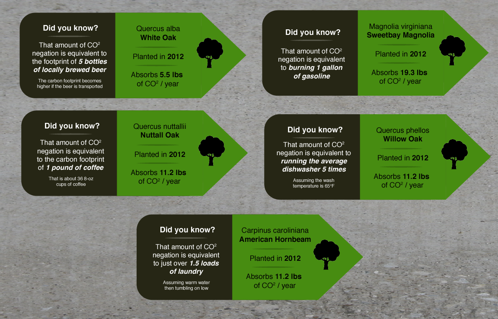
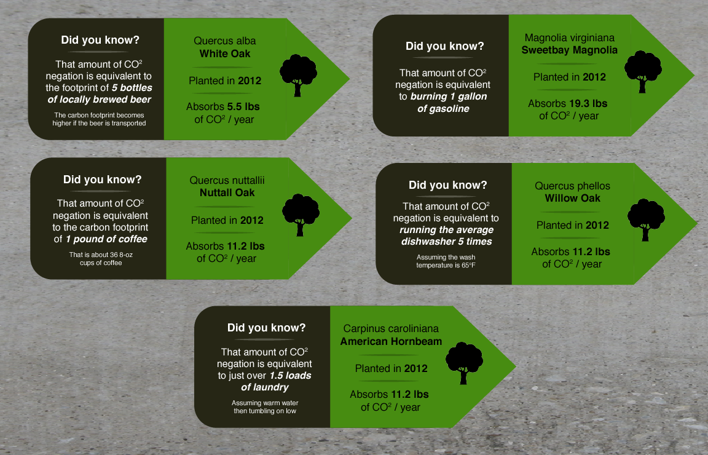

Progress Blog
4/21/18
Photoshoot of final product
For documentation purposes, I rented a camera and lighting kit from the LMC film equipment lab. I took photos of the sash in isolation, on my body, and in social settings.

{kind=link}
{kind=link}
{kind=link}
{kind=link}
{kind=link}
{kind=link}
{kind=link}
{kind=link}
{kind=link}
{kind=link}
4/19/18
Demo day
For the GVU Research Showcase, I presented my project accompanied by a poster. My setup was located in Room 209 of the TSRB, where I stood wearing my data sash. Throughout the course of the showcase, I recieved some good feedback and had a lot of great conversations about the sash.
These included discussions about the current state of emissions in the United States, the pitfalls of currently available carbon calculators, how to reduce a carbon footprint, clarifying questions about the design of the sash, what makes up my footprint, and speculation about people's own footprints.
Several people indicated that they thought their footprints would be even worse than mine. Several more people seemed to indicate that they weren't sure how it would feel to own a sash that shows a "bad" footprint, as a sash seems "like something for displaying something you are proud of."
I found that most people were not surprised by the graph on the back of the sash, but generally sounded disappointed to see the facts.
I was asked many times what I intend to do next with the project, which I did not have a good answer for. However, I spoke to a few educators who seemed excited about the idea of using these sashes to help teach young kids about carbon footprints in a tangible way, which I think is a great idea. This is also in line with the current association of sashes with scouts, though the project does not have to be limited to just these organizations. I think that spreading the project as a way for others to craft their own data sashes and critically reflect upon their data through that process would be a great direction for future work.
{kind=link}
3/23/18
Fabric sash creation
Over the course of several days, I created the final fabric version of the data sash. With a few contruction mishaps along the way and some waiting on additional materials to arrive, this process took about 10 days.
I created a white sash as a base for the other design elements. I used a template from Adafruit's skill badge sash, increasing the length and width slightly to make it appropriately sized for an adult.
I collected fabric scraps from tshirts at goodwill to use as the colored bars. Since the front area of the sash is equivalent to 16.5 metric tons of emissions and I wanted each section to scale, I constructed a paper cutting guide to get the correct diagonal length for each strip. Using a combination of fabric glue and sewing machine thread, I secured these strips to the white base sash.

While I originally intended to use iron on heat transfer vinyl for the logos, I found that mod podging paper logos onto button pins would be much easier and look cleaner in the end.

I created a large summary badge to accompany these small button pins, using paper and clay's button making machine. I used heat transfer vinyl to apply text labels to the corner of the sash, as well as to make the large global emissions graph on the back.


Here are some images from the challenging parts of construction, including realizing that fabric glue shows through thin fabric (resulting in adding another layer on top), learning how to clean the nozzles on an inkjet printer (after having thoroughly searched campus for one, and ultimately borrowing my advisor's), melting my heat transfer vinyl with an iron, and rethreading the sewing machine multiple times because the thread kept jamming or splitting in half.
{kind=link}
{kind=link}
{kind=link}
{kind=link}
{kind=link}
{kind=link}
{kind=link}
{kind=link}
{kind=link}
{kind=link}
2/15/18
Large-scale responsibility included in the design
After reading some articles about common problems with sustainability-focused designs, I made an effort to not put the entire emphasis for footprint responsbility on the individual. As these articles suggest (see Dourish and DiSalvo in the References section), modern projects with environmental focuses often fail to address the overarching political, social, and economic contexts for these issues, putting an unrealistic strain on the individual because it is easier to address than the larger-scale systems.
To counter this, I added a focus on corporate responsibility by including logos for the most common companies from which I purchased goods and services, home utilities, and travel (including airfares, gas, and my car's manufacturer.) Later I would add icons for the food section, as well as the most common places that I purchase groceries. The choice of which logos was determined with the help of Mint's categorization and filtering features, using data from the past year.

2/6/18
Awareness campaign context for the sash
After talking to a several people and feeling that the previous idea was a little too dystopian, I switched to an awareness campaign context. The more accurate speculative data collection is still possible for a company, possibly a non-profit, to facilitate with a custon carboon footprint calculator. They could then produce a sash for the user, including an offset of its production emissions in the price.
Alternatively, I also considered a more grassroots option in which people could print their own sashes at home if provided with a template after data entry. Another production option could also involve the company providing a kit and template to make your own cloth sash at home, increasing intimacy with the data and garment itself.
I produced two more iterations of paper prototype to test design elements. I tested how to visualize data over time, in case I might want to provide new sashes on a yearly of monthly subscription basis.
I also experimented with comparison methods that allow totals for two different individuals to be compared at a glance. The first involved a four-tone grayscale color coded bar that indicated where the wearer's sash falls in comparison to the national average (almost zero, below average, above average, approaching twice the average.) The grayscale scheme of this section was meant to distinguish it from the rest of the sash, but people I interviewed found it to still look too much like the other sections. The second and more successful comparison technique simply let the total length of the sash to be twice the national average and include a marker for the average, allowing the individual's data to fill it as appropriate.

1/30/18
Government-issued carbon footprint sash
Considering the most effective way to collect the carbon production data, I envisioned a scenario in which carbon footprints are tracked and regulated in a manner similar to income. Companies could be required report their production practices and, paired with already existing financial tracking methods, the purchasing section of an individual's carbon footprint could be accurately determined. The same could work for travel and home utilities, resulting in a national policy enabled high-accuracy carbon footprint.
This government-regulated speculative turn for the project suggested a new context: in addition to facilitating better collection of data, the government could also provide the visualization garments to all citizens, as part of perhaps a dire all-out effort to reduce the entire nation's emissions. This would make sense in a future experiencing the drastic impact of climate change, in which nations are trying their best to put the brakes on emissions.
The form of the garment changed to a sash, which is more gender neutral and has existing associations with merit. Citizens could wear their carbon footprints with pride, as well as earn badges/pins for the years that they were under the national target.
I encountered my first design problem involving the constraint of the garment's size. All sashes should ideally be about the same length to be worn properly, but the carbon footprint totals are of different sizes. The public and social nature of the visualization implies that it should be readable by others, so a standard sizing of sections based on the numbers would be ideal.
For this first prototype, I did not have the sashes comparable like this, instead experimenting with using color saturation and additional clothing adornments such as tassles to indicate overall footprint status. However, feedback from people I discussed the design with indicated that these were not effective in conveying footprint size.

1/16/18
Carbon footprint shawl with my data
At the beginning of the semester, I brought in idea of carbon emissions shawl, as well as various sketches of how to visualize data on this type of article. I liked the ease of placing graphics on this garment, as well as how wearers can add it as an accessory to existing outfits rather than it needing to a large multi-garment piece. These designs mainly featured my personal data, contrasted some with the better-than-average user data I collected previously.
I recieved recommendations to think further about the context that this piece would exist within (Why do people wear it? Do you wear it every day? How is manufactured?) as well as to consider whether a more gender-neutral base article would help the design to be more desirable to a larger audience.
{kind=link}
1/16/18
Personal data collection
To have data I am more intimately familiar with, I also collected my own carbon footprint data. Using the same carbon calculator as I did with my friend from Ohio, I filled out the sections using my home utility bills, purchase categories from Mint, diet information from MyFitnessPal, and travel esitmates using old oil change stickers and distance estimates from Google Maps.
This dataset contrasts nicely with the data I collected previously, as I discovered through this collection process that my carbon footprint is a bit higher than the national average. I was surprised to see that my spending section was the largest, followed by my home natural gas bill. This is interesting because these include an example mostly within my control (shopping choices), and one that is less so (natural gas - considering the way my rental home is heated and how natural gas is unfortunately the most emissions producing utility.)
Through this personal data collection process, I also experienced a newfound disatisfaction with the carbon calculators available today. Although I used one that is fairly thorough and includes the food section that most others do not, I still longed for a much more detailed look than it is intended to give. I had to do some estimation when it comes to separating parts of the specific sections for visualization purposes. Also, I sourced the information I put in from various different places and found myself desiring a calculator that could pull some of this automatically by securely logging into these other accounts. I considered creating or mocking up a more ideal carbon calculator to go with the project, but kept my focus on the garment itself for the time being.
1/5/18
Refinement and user data collection
Outlining possible options for representing carbon footprint data on clothing, I decided that showing an individual's personal data as it relates to carbon would have the strongest correlation of content and form (as opposed to the global effects of emissions or the footprint of a collective body such as the city of Atlanta.) I sketched various choices for how to represent indivudal emissions data on clothing, considering articles for the base such as hats, shirts, scarves, and shawls. I also looked in to different baselines for the data to be compared against, such as neutral footprints, biocapacity, country averages, world averages, and policy recommendations (though I found no current policies that give a hard number on emission amounts rather than just aiming to reduce current emissions.)
I researched carbon footprints, calculators, and carbon offsets. I contemplated the issue of income inequality in the current state of carbon offset purchasing, noting that it might be a good route for my project to be inclusive and accessible for a wide range of people. I noted that much of an indivudal's CO2 production is nearly always affected by forces not directly in their control, such as the cleanliness of the power grid in their area, the efficiency of the building they rent, or even the sustainability practices of companies that they purchase products from.
After selecting an appropriate carbon caluclator that takes the categories of travel, home, purchases, and diet into consideration (not all calculators are so thorough), I collected data from a friend who lives in Dayton, Ohio. His particular footprint is better than the US average.


{kind=link}
{kind=link}
12/21/17
Setting up this website
Over the holiday break, I constructed this website. I used my own code from my portfolio site as a starting point, following recommendations from my advisor, official institute guidelines, and examples of past masters project sites as inspiration. I decided to include this chronological progress blog to help future MS get a better idea of what the process may look like and how projects can shift over time, as well as to help organize my own thoughts.
12/12/17
Shift from tree canopy education to personal data visualization with a focus on carbon footprints
At our final meeting before winter break, my advisor and I agreed upon a plan for what I could work on during the holidays. This included setting up the website, as well as building off of my carbon footprint research for visualization content. We discussed how the end product should be more than a mere representation of data, and how it should alsoinvite action and/or social interaction.
The possibility of visualizing an individual's carbon data through clothing was brought up and shortly thereafter I determined that this was the path I wanted to continue down for the rest of the project. While educating about the local tree canopy still felt like an appropriate idea, the medium of wearable data lends itself much more to the personal context of an individual's carbon footprint rather than general data about where they live. This would also make the project much more relevant to today's top issues, such as global warming and personal data collection.
11/26/17
Carbon footprint data walk
In parallel with my refinement of the master's project, I had been developed a related project in Dr. Loukissas's studio course. This project is a data walk designed for the Beltline, with the purpose of informing citizens about how much CO2 Atlanta produces vs negates.
This project used the Atlanta Tree Canopy Field Guide as well as additional research about the impact of common activities on carbon footprints, how much carbon trees negate, and Atlanta's overall carbon emissions.
 


{kind=link}
{kind=link}
11/11/17
Acquired prototype materials
After sending out a few emails and requests on various Slack channels, I recieved a basket of clothing from friends to use for raw material in constructing fabric prototypes. The week before, I also went to Goodwill about bought some articles that I thought might be useful and inspirational. These articles incuded hats, shirts, scarves, and a few other miscellaneous garment made of possibly useful material.
11/2/17
Clarification of exploratory questions
After some consideration, I also intend to carry on the themes of placement and materiality from the project's previous iterations, exploring how these play into wearable data (for example, data that is not fixed to a particular location, yet is fundamentally tied to a location such as the city of Atlanta.)
For materiality, I also looked at some example projects to clarify how wearable materials can be chosen to bring a deeper meaning to the end artifact. For example, several projects with notably interesting material choices use their materials to make normally invisbile data seen in a new way. For example, Dressed in Data (see under Related Projects) map unseen air quality data onto our bodies, highlighting the environment we live in but can not usually percieve.
Meeting with my advisor, I was prompted to begin making prototypes to accelerate the process of refining my final idea.
10/29/17
Focusing on desired effect: Education about the Atlanta tree canopy's impact
Reapproaching the purpose of the product, at this point I wanted to keep education about the impact and importance of Atlanta's tree canopy as my main focus. The only difference would be that it should now happen through the medium of data clothing rather than data sculpture. This was selected from among several other possibilities: directly taking action through depositing seeds in the city (hard to be effective?), inviting citizen action (planting trees on property, involvement with ordinances), promoting general awareness of the canopy, and educating about how much canopy is being lost (insufficient data, as the only fully completed tree canopy assessment is the one from 2008.)
At the time, I thought to explore positive effects, negative effects, and anything in between. Examples of ideas are to explore representing the urban heat index, pollen count, shade, and general canopy density. This would not merely represent the tree canopy in a positive light, but would give the viewer multiple angles and possible interpretations of the subject.
10/24/17
Shift from art installation to wearable data
After considering my in-progress work up to this point, I decided to shift from focusing on an art installation to a wearable product. My advisor and I both felt this would make for a more interesting, dynamic, and relevant project. It would also be a good way to explore personal relationships with data. As such, I decided to continue looking at literature and example projects that more closely align with this type of project.
10/18/17
Data field guide
As part of my studio course with Dr. Loukissas, I constructed a data field guide for the tree canopy data. This included the Trees Atlanta dataset as well as several spreadsheets from the Accela citizen access portal. Visualizations, interview summaries, codebook, and overall context for the data can be found in the Atlanta Tree Canopy Field Guide.

{kind=link}
{kind=link}
10/20/17
Precedent projects: Placement and Materiality
In order to narrow my focus, I found more example projects, identified common themes amongst them, and identified what their significance is derived from. The strongest themes I found were placement and materiality, which I have been interested in since my original proposal, and I made a list of reference projects that exemplify these (see Related Projects.) I decided to focus on these for my installation prototype ideas.
September 2017
Dataset research
I met with my advisor and was prompted to refine the purpose of the project and come back with a few alternative options the next time we met.
As part of Dr. Loukissas's project studio course, I also delved deeper into the background of the dataset. I made a few digital visualizations of the Trees Atlanta dataset in order to understand it better and aid in brainstorming. These included plantings over time, genus/species breakdown, and genus plantings over time. I also contacted and interviewed an administrator for the Accela database and found a way to access a newer version of the data.
August 2017
Campus resources and materials
In the beginning of August, I was exploring possible materials and resources for constructing artifacts. I looked into 3D printing options and costs around campus, as well as the possibility of using wood and a CNC router to construct my models. While wood would have been cheaper and the possibility of representing tree canopy data using this material was intriguing, I decided that it likely would work against the message of my installation.
July 2017
3D model of medium-scale artifact
After gathering information, I began designing ideas for my installation. I ultimately decided to scale down the project to smaller pieces that I could potentially place on campus, as the permit timescale for a large piece did not seem compatible with the quality and certainty of my designs at the time.
At this time I was questioning the evaluation criteria of my installation, switching from a more strict and rigorous method to an open-ended exploration. I intended for my installation to have multiple artifacts with the purpose of educating about the tree canopy. The evaluation would look at whether the pieces successfully informed viewers. I also was exploring the idea of having a digital visualization to compare with the physical ones.
In late July I created a 3D model using Fusion 360. This model shows canopy coverage by NPU (neighborhood planning unit) in the form of an extruded map of Atlanta. I intended to 3D print this model and paint it to make it more legible.

{kind=link}
{kind=link}
{kind=link}
{kind=link}
June 2017
Gathering data
During the summer, I collected my data sets together and began researching them to better understand their context. I was given a dataset from my advisor, Yanni Loukissas, which contains information about the Atlanta tree canopy. This included tree reovals, plantings by Trees Atlanta, as well as building permit information from the Accela citizen access database.
I contacted Trees Atlanta for the first time during June, as well as calling Trees Atlanta to ask about their plantings. I also contacted and interviewed an arborist who works for the city of Atlanta in order to gain a deeper understanding of the state of the tree canopy, what work currently affects it, and what he believes citizens can do to impact it. I also researched what permits and process would be needed for my large installation to be placed in a public location.
April 2017
Original proposal of large-scale art installation
My original project proposal was for a large-scale art installation representing data in Atlanta. Looking at literature about information art, I found precedent projects and identified common themes amongst information art sculptures. I also explored other types of data representations, such as audio, light, and performance pieces.